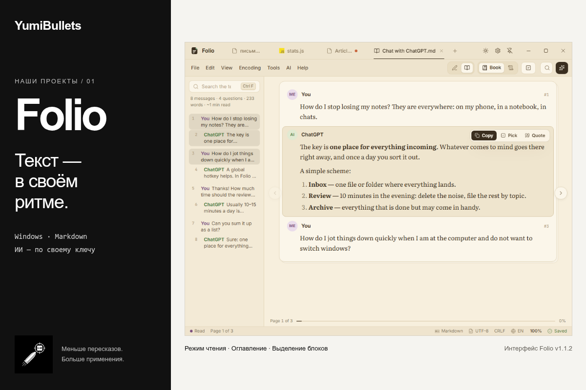

Folio — текст в своём ритме
Блокнот для Windows с Markdown, режимом чтения выгрузок ИИ-чатов и оглавлением. ИИ-правки подключаются отдельно — по своему ключу.
На обложке — скриншот интерфейса из релиза Folio v1.1.2, а не макет приложения. Файл приложения не подписан; Windows может показать предупреждение SmartScreen. Для ИИ нужен свой провайдер и ключ.